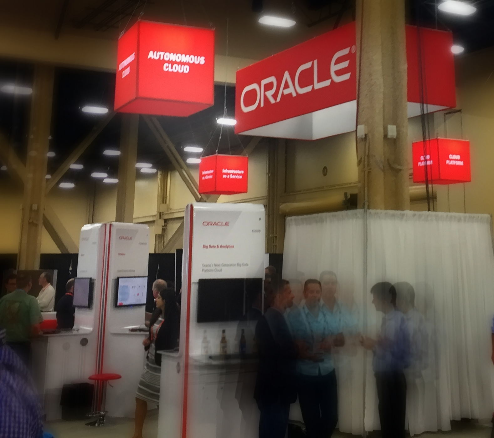
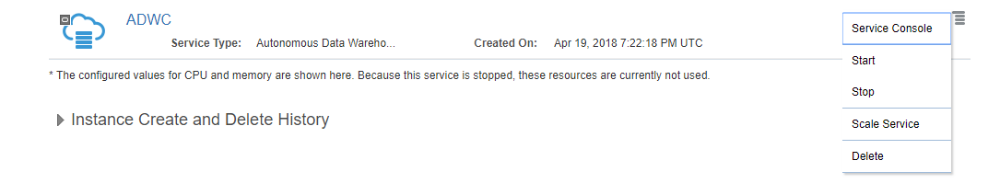
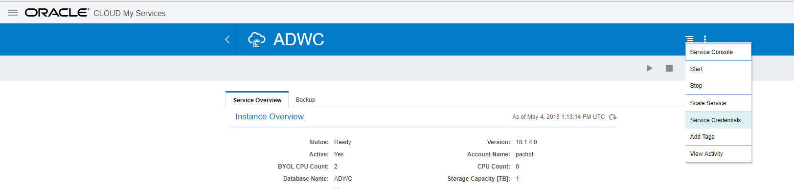

This was first published on https://www.dbi-services.com/blog/adwc-the-hidden-gem-zepplin-notebook/ (2018-05-04)
Republishing here for new followers. The content is related to the versions available at the publication date.
. 
In the previous blog posts I explained how to create, and stop/start the Autonomous Data Warehouse Cloud service. And I didn’t show yet how to connect to it. It is easy, from sqlplus or SQL Developer, or SQLcl.
But there’s something more exciting to run some SQL queries: the Oracle Machine Learning Notebooks based on Apache Zepplin. At first, I didn’t realize why the administration menu entry to create users in the ADWC service was named ‘Manage Oracle ML Users’, and didn’t realize that the ‘Autonomous Data Warehouse Cloud’ header was replaced by ‘Machine Learning’.
But last week at IOUG Collaborate 18, I visited the Demo Grounds and thanks to Charlie Berger I realized all the power of this: we are in the ‘Machine Learning’ interface here and the home button opens all the features available to query the ADWC database, including the SQL Notebooks based on Apache Zepplin. 
Here is the path to this hidden Gem. From your ADWC service, you go to the Service Console:
Here you log as the ADMIN user with the >12 characters password that you have defined at service creation. Don’t worry if you forgot it, you can reset it from here: 
Once connected, you go to the Administration tab and choose the ‘Manage Oracle ML Users’:
Here you have to create a user because the ADMIN user not a Machine Learning user. Machine Learning users need one of the following roles: OML_DEVELOPER, OML_APP_ADMIN, OML_SYS_ADMIN. The user you will create here will have OML_DEVELOPER which is required to use SQL Notebooks.
Now that you have a user created from here, you can click on this little house icon, which is your home in the Machine Learning part of the ADWC:
Here you connect with the user you have created from the Oracle ML User page (not the ADMIN one as it has no OML role granted).
Then you are in your OML home, ready to run SQL from a Notebook:
I’ll show what you can do in future post. But just to give you an idea, you have a Notebook where you can type a query, execute it, and have the result displayed as a table, or as a graph. Here I was looking at I/O latency and the following shows me that the ‘cell single block physical read’, which are nothing else than the buffered one-block-at-a-time reads that are called ‘db file sequential read’ when not on Exadata, in dark green here, have most of their I/O call time between 128 and 512 microseconds.
I like this way to have the result just under the query, with easy formatting. The code, documented, is at the same place as the result, in a notebook that is easy to refresh, or share. And you can export the whole in a simple JSON file.
{kind=link}
{kind=link}
{kind=link}
{kind=link}
{kind=link}
{kind=link}
{kind=link}
{kind=link}